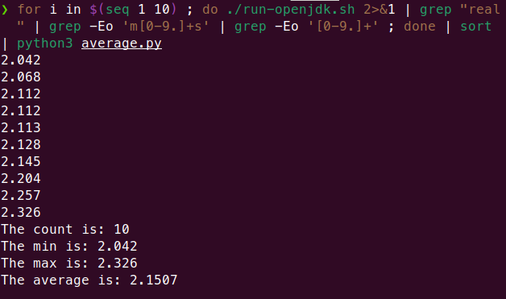
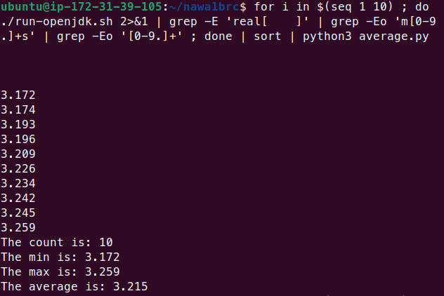

CLOSE

CLOSE
CLOSE
Results

i9 13Gen (32 vCPU) - 128GB 2.1507 seconds | m6a.8xlarge (32 vCPU) - 128GB 3.215 seconds |
No "Unsafe" - No GraalVM Readable Code! | |
© NawaNawa 2024 Copyright NawaNawa <contact@nawaman.net> 2024
i9 13Gen (32 vCPU) - 128GB 2.1507 seconds | m6a.8xlarge (32 vCPU) - 128GB 3.215 seconds |
No "Unsafe" - No GraalVM Readable Code! | |